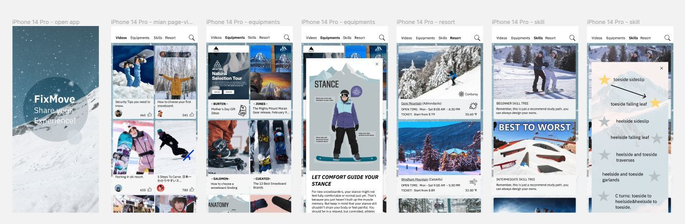
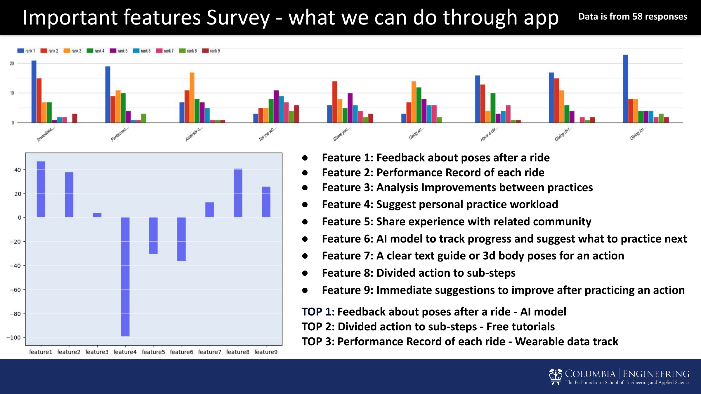
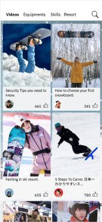
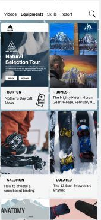
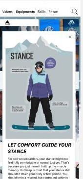
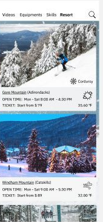
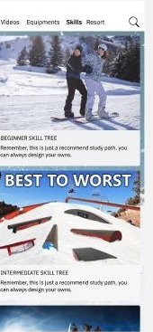
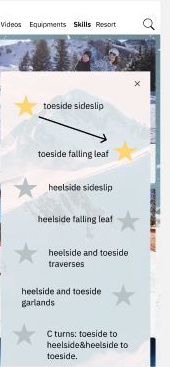

HCI & UX · Physical skill learning
FixMove
Designing support for learning a physical skill
How can an app help someone turn a movement they have watched into a skill they can practice? I designed the user research and interface prototype for FixMove, using a feature-priority survey to shape a snowboard-learning experience and a staged plan for personalized feedback.
- My contribution
- User research, questionnaire and recruitment-poster design, analysis, interface and interaction prototyping, technical planning, and presentation
- Project
- Columbia University · Research and interface prototype
- Research
- 58 archived survey responses · April 2023
- Team
- Yina Jian, Ziyao Gao, Yue Rao

01 · The question
From watching a movement to knowing what to practice
A tutorial can show what a movement looks like while leaving a learner unsure which part of their own movement needs attention. FixMove began with the idea of combining sports-learning resources with feedback informed by movement data.
We narrowed the initial concept to snowboarding. This gave the project a concrete setting for asking what guidance learners valued and which parts of the experience an app could support first.
How could we help a learner find an appropriate next step, then build toward feedback grounded in their own practice?
02 · My contribution
Research and design, from the questionnaire to the prototype
I designed the recruitment posters and the online and offline questionnaires, analyzed the survey, and developed the requirements, information architecture, and Figma interface and interaction prototype. I also developed the technical plan and prepared the project presentation.
I worked with Ziyao Gao and Yue Rao, who supported flyer distribution and the commercial analysis. The work below shows the research and design material I developed within that collaboration.
03 · User research
What kind of help should the app provide?
I used a feature-priority questionnaire to compare nine kinds of support, from tutorials and skill breakdowns to performance tracking and AI feedback. The archived online response table contains 58 responses, collected April 24–30, 2023.
Each feature received a rank from 1 to 9, and respondents could assign equal ranks. The comparison below preserves those responses without combining them into a new overall score.
Feature priorities
Responses placing each feature in ranks 1–3.
- Feedback after a ride43 / 5858 ratings43 of 58 responses in ranks 1–3. Full distribution: rank 1: 21, rank 2: 15, rank 3: 7, rank 4: 7, rank 5: 1, rank 6: 2, rank 7: 2, rank 8: 0, rank 9: 3.
- Record each ride39 / 5858 ratings39 of 58 responses in ranks 1–3. Full distribution: rank 1: 19, rank 2: 9, rank 3: 11, rank 4: 10, rank 5: 4, rank 6: 1, rank 7: 1, rank 8: 3, rank 9: 0.
- Compare progress between practices35 / 5858 ratings35 of 58 responses in ranks 1–3. Full distribution: rank 1: 7, rank 2: 11, rank 3: 17, rank 4: 8, rank 5: 7, rank 6: 5, rank 7: 1, rank 8: 1, rank 9: 1.
- Suggest a practice workload13 / 5858 ratings13 of 58 responses in ranks 1–3. Full distribution: rank 1: 3, rank 2: 5, rank 3: 5, rank 4: 8, rank 5: 11, rank 6: 9, rank 7: 7, rank 8: 4, rank 9: 6.
- Share with a community28 / 5858 ratings28 of 58 responses in ranks 1–3. Full distribution: rank 1: 6, rank 2: 14, rank 3: 8, rank 4: 5, rank 5: 10, rank 6: 6, rank 7: 4, rank 8: 2, rank 9: 3.
- AI guidance on what to practice24 / 5858 ratings24 of 58 responses in ranks 1–3. Full distribution: rank 1: 3, rank 2: 7, rank 3: 14, rank 4: 12, rank 5: 8, rank 6: 6, rank 7: 6, rank 8: 2, rank 9: 0.
- Text or 3D movement guidance33 / 5858 ratings33 of 58 responses in ranks 1–3. Full distribution: rank 1: 16, rank 2: 13, rank 3: 4, rank 4: 10, rank 5: 3, rank 6: 4, rank 7: 6, rank 8: 1, rank 9: 1.
- Break an action into steps43 / 5858 ratings43 of 58 responses in ranks 1–3. Full distribution: rank 1: 17, rank 2: 15, rank 3: 11, rank 4: 6, rank 5: 4, rank 6: 0, rank 7: 2, rank 8: 1, rank 9: 2.
- Immediate feedback after practice39 / 5858 ratings39 of 58 responses in ranks 1–3. Full distribution: rank 1: 23, rank 2: 8, rank 3: 8, rank 4: 4, rank 5: 4, rank 6: 4, rank 7: 2, rank 8: 3, rank 9: 2.
placed feedback about poses after a ride in ranks 1–3.
placed breaking an action into sub-steps in ranks 1–3.
These preferences helped frame two connected directions: make guidance easier to navigate, and work toward feedback about the learner’s own movement. We could prototype the information experience while planning the sensing and data collection needed for the latter.
Read the questionnaire
Please rank the features below based on their importance in your learning experience. Equal ranks were allowed.
- Feedback about poses after a ride
- Performance Record of each ride
- Analysis Improvements between practices
- Suggest personal practice workload
- Share experience with related community
- AI model to track progress and suggest what to practice next
- A clear text guide or 3d body poses for an action
- Divided action to sub-steps
- Immediate suggestions to improve after practicing an action
Two optional free-text prompts asked about other important features and additional suggestions. Both were left blank in the archived response table.
View the response counts
| Feature | 1 | 2 | 3 | 4 | 5 | 6 | 7 | 8 | 9 |
|---|---|---|---|---|---|---|---|---|---|
| Feedback about poses after a ride | 21 | 15 | 7 | 7 | 1 | 2 | 2 | 0 | 3 |
| Performance Record of each ride | 19 | 9 | 11 | 10 | 4 | 1 | 1 | 3 | 0 |
| Analysis Improvements between practices | 7 | 11 | 17 | 8 | 7 | 5 | 1 | 1 | 1 |
| Suggest personal practice workload | 3 | 5 | 5 | 8 | 11 | 9 | 7 | 4 | 6 |
| Share experience with related community | 6 | 14 | 8 | 5 | 10 | 6 | 4 | 2 | 3 |
| AI model to track progress and suggest what to practice next | 3 | 7 | 14 | 12 | 8 | 6 | 6 | 2 | 0 |
| A clear text guide or 3d body poses for an action | 16 | 13 | 4 | 10 | 3 | 4 | 6 | 1 | 1 |
| Divided action to sub-steps | 17 | 15 | 11 | 6 | 4 | 0 | 2 | 1 | 2 |
| Immediate suggestions to improve after practicing an action | 23 | 8 | 8 | 4 | 4 | 4 | 2 | 3 | 2 |
The archive records responses, without establishing a unique participant count or a representative sample.
See the result slide from the original presentation

04 · Design process
Turn the research into a manageable first experience
The proposal grew from a broad wearable-sports idea into a staged product concept. I used the survey alongside the project’s content plan to decide what the information-sharing prototype should make visible.
- 01
Choose a concrete learning context
Focus on snowboarding, with recognizable equipment, places to practice, and skill progressions.
- 02
Separate guidance from sensing
Compare the need for learning resources with features that would require motion records and reliable analysis.
- 03
Organize the information
Give videos, equipment, skills, and resorts their own entry points while keeping them within one learning experience.
- 04
Prototype the interactions
Explore a browsable feed, explanatory overlays, and a skill tree before adding the complexity of wearable feedback.
| Input | Design response |
|---|---|
| Survey interest in breaking actions into steps | Beginner and intermediate skill categories, with a visible skill-tree overlay. |
| Content plan for tutorials and shared experience | A video and community feed as an entry point into practice. |
| Practical preparation for a sport | Equipment explanations and resort information alongside skill content. |
| Feedback features that depend on movement data | A separate development plan for tracking, model training, and personalized feedback. |
05 · Interface prototype
Explore the original screens
I organized the prototype around four areas. Select an area to see the original interface screens and the intention behind each interaction.

01 · Interface study
A starting point for practice
A browsable feed brings together introductory videos, technique explanations, and shared experience. The design gives learners several entry points into the material instead of requiring them to know a precise search term.
Design intentionStart with accessible learning resources and a place to exchange experience.


02 · Interface study
Keep equipment guidance in context
The equipment view connects browsing to an explanatory detail overlay. Gear recommendations sit alongside learning content, so the interface can help a learner understand choices such as stance and equipment setup.
Design intentionSupport the practical decisions around a skill as well as the movement itself.

03 · Interface study
Connect practice to a place
Resort cards bring together snow conditions, opening hours, and ticket information. This extends the experience from finding a tutorial to planning an opportunity to practice.
Design intentionMake the setting for practice part of the information architecture.


04 · Interface study
Make progression visible
Beginner and intermediate skill categories lead to a skill-tree overlay. The prototype organizes movements into a visible progression, giving the learner a way to locate a next step and return to related guidance.
Design intentionTranslate the need for step-by-step learning into navigable skill structure.
These are the archived Figma interface screens. The presentation also links to the original interaction walkthrough ↗.
06 · Technical direction
Build from learning resources toward movement feedback
The roadmap separated the interface prototype from later capabilities that would depend on sensors, data, and model performance. It gave the project a way to pursue personalized assistance while first making the learning experience concrete.
Interface prototype
Resources and orientation
Videos, shared experience, equipment information, resort cards, and a skill progression structure.
Planned extension
Records and structured practice
Performance tracking, more detailed movement guidance, action sub-steps, and suggested practice workload.
Research direction
Personalized feedback
Collect movement data, evaluate models, and develop feedback about technique and progress.
07 · Outcome & reflection
Make the next step understandable
The project produced a feature-priority study, an information architecture, a multi-screen interaction prototype, and a staged development proposal. It brought my user-research and interface-design work together around a physical learning task.
The question I return to is how an intelligent system should decide which feedback is useful at a particular moment. A learner needs guidance they can interpret and act on. That attention to the person receiving feedback continues to shape my interests in human–robot interaction and embodied learning.